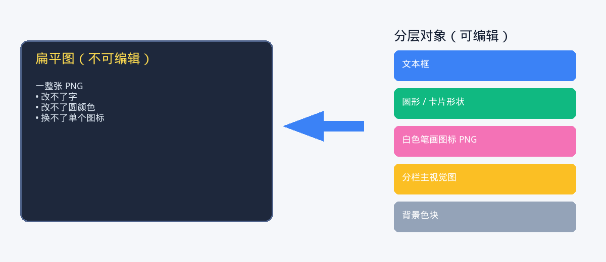

从「好看的图」到「可编辑 PPT」：怎样让 Agent 真正帮你把事做完
一篇实战笔记：不是靠玄学出片，而是教会 Agent 正确的工作流——把信息图拆开，再组装成真正能改的 PowerPoint。
你让 AI 做一页 slide。 它交出来，挺好看。
然后你想改一个字……发现自己面对的是一张 扁平大图。
这就是分岔口。
这篇文章讲的是另一条路：用 Agent 把那张图 重建 成 分层、可编辑的 .pptx——字能改、圆能换色、图标能替换。重点不是「AI 会做 slide」，而是：如果你给它对的心智模型，AI 才能帮你把事做完。
陷阱：把整张图贴进 PPT
最快的交付，往往最没用：
生成一张漂亮信息图 → 整页贴进幻灯片 → 交差。
聊天里大家会夸。开会时有人说「第三列标题能改一下吗？」——你就傻了。

看起来做完了。其实改不了。
打通一切的心智模型
信息图是像素；可编辑 PPT 是对象栈。

| 你看到的 | PPT 里应该是 |
|---|---|
| 标题 / 说明 / 脚注 | 文本框 |
| 卡片、色条、色圆 | 原生形状 |
| 照片 / 插画 | 独立图片 |
| 图标笔画 | 透明底 glyph PNG |
| 图标圆形底 | 圆形 shape（实心或描边），与 glyph 组合 |
一旦你和 Agent 共享这个模型，工作就从「再美一点」变成 「拆分 → 确认 → 组装」。
这也是停止「为了一个烂图标，整页反复重生」的关键。
第 1 步——先锁定任务（还没开始生成之前）
先告诉 Agent「什么叫做完」：
- 比例（通常 16:9） - 哪些必须可编辑（文案？颜色？图标？） - 图标样式（实心圆 / 空心描边） - 语言与语气
好用的提示形状：
我要的是 可编辑 的 16:9 PPT，不是一张扁平图。
请把这张信息图拆成：文本框 + 形状 + 分栏主视觉图 + 透明图标笔画，并叠在 PPT 圆形上。
先预览图标，再组装整页。
你不是在点一张图，你是在雇一个制作搭档。
第 2 步——把视觉拆成零件
让 Agent 按栏拆素材，而不是再生成一张超级大图。
例如各列主视觉：


每一张之后都是可单独替换的图片对象。
图标同理：笔画（glyph） 和 圆 是两样东西。
第 3 步——别太早相信「透明图标」
AI 出图很爱把这些烤进文件：
- 深蓝方底 - 或「棋盘格假透明」（其实还是不透明像素）
看起来像图标。其实是合成死图。
哪怕清理过一轮，放到浅色底上仍可能露馅：
看起来嵌进去，贴到 slide 上也会嵌进去。
很多 Agent 跑飞就飞在这里：不停重生整份 PPT，却不去修 素材本身。
第 4 步——只留白色笔画（glyph）
干净做法：
1. 只提取 白色笔画 → 真透明 PNG 2. 蓝圆交给 PowerPoint，用 形状 做

这才是放进 PPT 的图片。
再用浅色底验证透明：

没有方块。没有棋盘格。只有笔画。
第 5 步——组装整页之前，先预览图标配方
按 PPT 最终用法做 mock：
- 列图标： 实心蓝圆 shape + 白色笔画叠上 - 页脚指标： 白色笔画 + 空心描边圆

强制门禁： 先给自己（或同事）看，说一句「OK」，再让 Agent 生成 .pptx。
这一步能省掉大量「看着不对 → 全部重来」。
第 6 步——用原生 PPT 图层组装
让 Agent 用 python-pptx 之类工具搭：
1. 背景 shape 2. 顶栏 / 卡片 / 底栏（形状） 3. 标题与正文（文本框） 4. 图标组合 = 圆形 shape + glyph PNG 5. 分栏主视觉图
图标两种常见配方：
- 实心风： 椭圆（实心填充）→ 笔画居中 → 组合 - 描边风： 笔画 → 椭圆（无填充，仅描边）→ 组合
结果：在 PowerPoint / WPS 里，点标题就能改字；取消组合就能改圆颜色；换一张栏图不影响其他元素。
这才叫把事做完。
怎样让 Agent 帮你，而不是空转
要做
- 一上来就说清对象模型（「文字 / 形状 / 笔画 / 分栏图」） - 整页组装前，先要 图标预览 - 先修素材，再重组（不要为一个图标重造宇宙） - 在 Cloud / 手机上要可下载链接（别给 127.0.0.1） - 把方法沉淀成可复用 skill，下次更顺
别做
- 把「整图贴进 slide」当成可编辑交付 - 让脏底图标混进终稿 - 把可改色的圆烤进图标 PNG - 组装完了再改图标风格，却不回预览门禁
好用提示词
开场：
把这张信息图变成可编辑的 16:9 PPT。拆成文本框、形状、分栏图、透明笔画图标。先预览图标。
图标很脏时：
只保留白色笔画为透明 PNG。圆用 PPT 形状。重组前先给我「仅笔画」和「笔画+圆」预览。
它又交扁平图时：
这不可编辑。按「拆分 → 确认 → 组装」重建成分层对象。
这和「Harness」有什么关系
碰运气成功一次，不叫系统。
一份 skill / 作战手册——「信息图 → 可编辑 PPT」——才是让下一次 Agent 少发疯的小 harness：
- 目标清楚 - 验收清楚 - 已知翻车点清楚 - 有一道门禁（图标预览）挡住空转
英雄不是 Agent。 你 + 一套好 harness 才是。
收尾
好看图容易。 可编辑 slide 是制作问题。
想让 Agent 帮你收尾：
1. 强制对象模型 2. 把图拆成零件 3. 把笔画清到「无聊的透明」 4. 确认图标 5. 分层组装 6. 把方法留下来
这样你才从「挺好看的图」走到「会上真能改的 PPT」。
本目录配图
| 文件 | 说明 |
|---|---|
images/00-flat-vs-layered-zh.png | 心智模型（中文） |
images/01-target-infographic.png | 起点视觉 |
images/02a–c-panel-*.png | 拆开的分栏图 |
images/03a–b-*.png | 脏 / 烤制图标 |
images/04–06-*.png | 干净笔画与组合预览 |
相关 skill
流程沉淀为 Editable PPT（bestpractice_editable_ppt.md），放在 content-infra / skills。